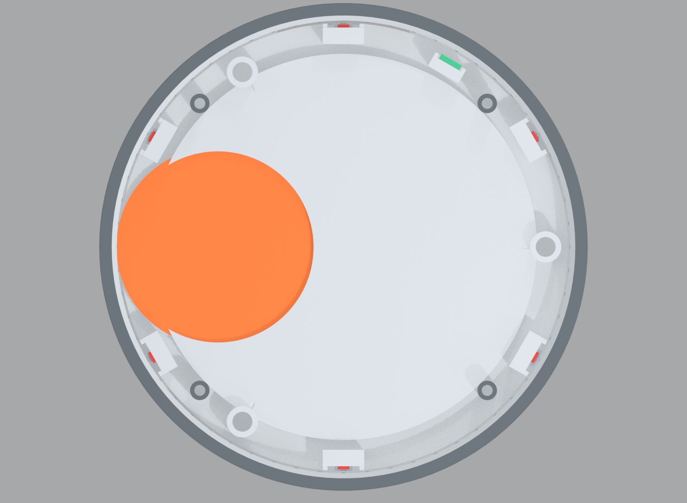
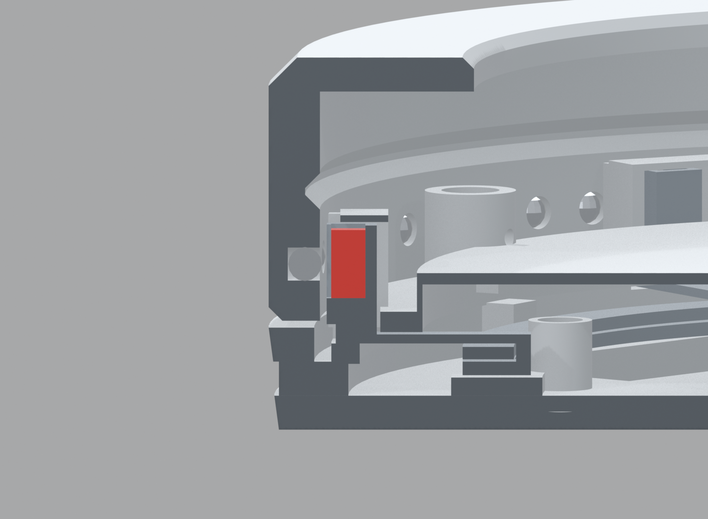
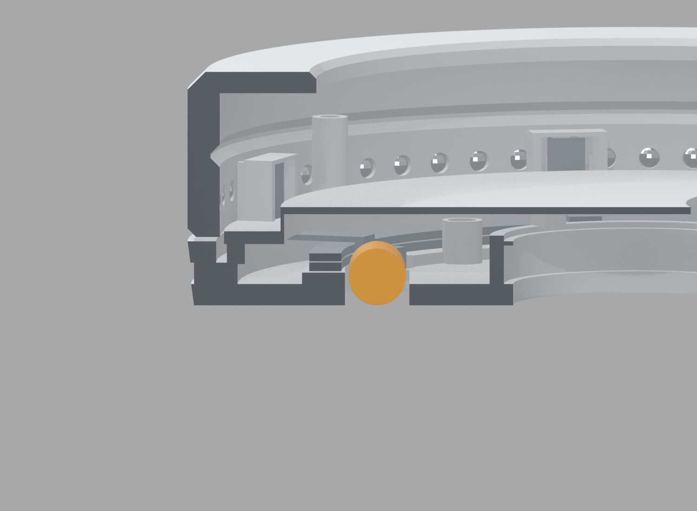

Where Everything Fits
Every bought component placed exactly as the v7.1 model puts it, cut open one mechanism at a time. Coloured solids are bought parts; light grey is printed structure; the dark grey faces are where the section knife passed. All dimensions in millimetres, azimuths measured anticlockwise from the +X axis, with the ports at 90°.
Plan — the floor
Horizontal section at z 12, looking down. 12 o'clock is 90°, where the ports face away from you. Everything on this level sits on the pad and goes in when the steel plate does.

- Drive motor Ø16 × 7az 180° · r 32.65 · z 0–7 — flat gimbal-class BLDC, in a Ø19 hole in the plate
- Push solenoid Ø6 × 10az 205° · r 22–32 · z 6.3 — pushes the drive arm out to engage the tyre
- Carrier gearmotor Ø8 × 20az 350° · r 36 · z 4 — lies flat, tangential axis
- Worm Ø4.5 × 7meshes ring A's toothed tab at 324°; holds position unpowered
- Speaker Ø36 × 5on the axis · z 3–8 — fires down through the plate
- Supercapacitor 1az 105° · r 21–37 · z 7 — radial axis
- Supercapacitor 2az 119° — envelope only, see the note below
- Port board 40 × 14az 90° · r 38.5 · z 0.95–2.55, on 1 mm standoffs
- USB-C socketmid-mount, centre at z 1.75
- 3.5 mm jacksink-mount; body top 4.7 clears ring A at 4.8
- Haptic LRA Ø10 × 3.6az 105° · r 44 · z 9.2–12.8 — hangs under the inner roof, higher than the rest
Plan — the detent ring
Horizontal section at z 21, looking down: the level where the knob meets the base. The six magnets sit in towers on the static base; the sixty balls are pressed into the rotating knob.

- Magnet A @ 30°3 × 3 × 6 N42, ring A
- Magnet B @ 90°ring B
- Magnet A @ 150°ring A
- Magnet B @ 210°ring B
- Magnet A @ 270°ring A
- Magnet B @ 330°ring B
- Encoder AEDR-8300az 60° · r 54.7 · reads a code band on the knob bore across a 2 mm gap
- 623ZZ wheel @ 0°r 52.63 · z 19–23, in a V-collar on an eccentric bush
- 623ZZ wheel @ 120°
- 623ZZ wheel @ 240°
- Drive tyre Ø51az 180° — presses 0.15 into the bore when engaged
- Carrier gearmotorbelow this plane, shown for orientation
Self-turning drive
Vertical section at 180°. The motor sits in a hole in the steel plate; its shaft carries a hub with an O-ring tyre that presses outward into the knob bore.

- Drive motor Ø16 × 7z 0–7, on the pad, through a Ø19 hole in the plate
- Shaftz 7–12.2
- Tyre Ø51z 10.2–12.2 · pressed 0.15 mm into the Ø116 bore; backs off 1.0 mm when idle
- Drive arm (printed)pivots 14 mm along the tangent so the swing moves the tyre almost purely radially
Adaptive detent
Vertical section at 30°, through one magnet tower. The knob wall is on the left; the magnet faces its bore across a 0.8 mm gap.

- Magnet 3 × 3 × 6z 11.6–17.6 · face at r 57.0 — 0.4 mm lip plus 0.4 mm air to the ball tips
- Ø3 ballpressed 2.8 deep into the knob bore, 0.2 mm proud · axis at z 14.6
Carrier drive
Vertical section at 350°, through the gearmotor. This is the mechanism that changes the detent strength — it shifts the two magnet rings relative to each other.

- Gearmotor Ø8 × 20tangential axis at r 36, z 4 — lies on the pad
- Worm Ø4.5 × 7drives a toothed tab under ring A at 324°
- Carrier ring Az 4.8–6.0, worm-driven, +1.5°
- Carrier ring Bz 6.2–7.3, turned −1.5° by the rocker at 255°
Knob support wheels
Vertical section at 0°, through one of the three wheels. The bearing runs in a V-groove cut into the knob bore.

- 623ZZ bearing3 × 10 × 4 · r 52.63 · z 19–23, inside a Ø13.2 printed V-collar
Ports and cable tunnel
Vertical section at 90°, the rear. Both sockets are on one small board under the full-width halo, in a tunnel that passes beneath the light ring.

- Port board40 × 14 × 1.6 · z 0.95–2.55 on 1 mm standoffs
- USB-Cmid-mount · centre z 1.75 · plug 11 × 6.5 clears the 6.0 tunnel ceiling
- 3.5 mm jacksink-mount · axis z 2.2 · body top 4.7, ring A sits at 4.8
Halo light ring
Vertical section at 225°. The LED board sits on the outer face of the LED wall, behind a translucent diffuser, firing down and outward at the desk.

- LED ring board90 LEDs · r 57–58.2 · z 6.3–8.7, on the static base
- Halo diffusertranslucent PETG · r 58.5–62.5 · z 6–9, full 360°
- Plinthr 55.5–61.6 · z 3–6
Electronics bay
Vertical section at 112°, through the supercapacitors. This is the middle of the device — the volume a round product usually wastes.

- SupercapacitorØ8 × 16 envelope, radial, z 7
- Speaker Ø36on the axis, z 3–8, firing down
- Haptic LRAz 9.2–12.8, hard-coupled under the inner roof
- Display disc Ø115z 23.4–29.4
- Main PCB85.5 × 65 · z 20.8–22.4, components facing down